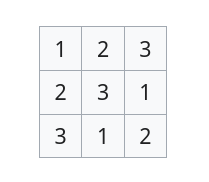

— or how to wrangle chaos
Stian Veum Møllersen / @mollerse
NDC Oslo 2025
Generative systems are systems that generate something based on a set of rules.
What make a generative system interesting is what it produces.
Any (interesting) system produces something, so what makes generative systems special?
The defining property of a generative system is that it uses simple rules to produce complex outputs.
The study of counting.
Can sometimes lead to explosions.
A combinatorial explosion describes the way a system with a limited input space has a solution space that grows exponentially.

A 3x3 system has 12 possible solutions.
9x9 => 5,524,751,496,156,892,842,531,225,600
Even if you limit valid solutions with Sudoku-rules you end up with
6,670,903,752,021,072,936,960 solutions.
Randomness is another source of simple input producing complex output.
You don't even need input, you can just yank entropy out of the void!
Perfect for a generative system, right?
You would think so, but randomness has the property of being chaotic or unpredictable.
People generally prefer things that are not completely random.
People have created ways to generate visually pleasing, but still sufficiently random, randomness: Pseudorandom Number Generators (PRNG).
PRNGs lie somewhere between a combinatorial system and pure random chaos.
You have output that behaves in predictable ways for a given input, like a combinatorial system.
But the set of valid inputs and outputs are unbounded, like randomness.
The inventor of the most famous function for pseudorandom noise for use in graphics: Perlin Noise.
Invented in 1982 for use in the movie Tron. For which Ken Perlin in 1997 won a Technical Achievement Oscar.
This is the heir to Perlin Noise. Same principle, only more performant and with fewer visual artefacts than it's predecessor.
Invented in 2001 by Ken Perlin.
The principle behind Perlin and Simplex noise is called gradient noise.
It's defining characteristinc is that small change in input leads to a small change in output.
A very cool property of gradient noise is how it generalizes to higher dimensions.
So you can sample values that adhere to the same rules along multiple dimensions.
Technically the PRNG, or noise, function produces a value in
[-1, 1] given an input.
When talking higher dimensional noise we talk about the input to the noise function.
noise1D(x) => n
noise2D(x, y) => n
noise3D(x, y, z) => n
noise4D(x, y, z, w) => n
We can even borrow tricks from additive synthesis to combine noise functions that can produce even more intresting noise.
Because we have a way to paint happy little lines, we should do something creative with them.
Something simple →
Parameterize →
Multiply →
Animate
Thank you for listening!
Stian Veum Møllersen / @mollerse
slides & code: github/mollerse/pseudorandom-pleasures-presentation